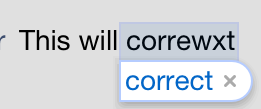

The Auto correction property enables whether a character field will enable the text corrector when typing text into the field. Applications which allow input from the user in text fields may need to have some fields with assistance to correct the text and others without. Values
Examples
 Scope
|
| Backlinks |
| Toc:Native Mobile Applications Development |